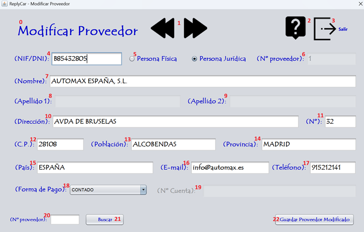

La modificación de un proveedor consiste en modificar la ficha con sus datos para poder ralizar las facturas y el seguimiento de las intervenciones. Sigue las instrucciones de la fotografía para realizar el proceso correctamente. Para realizar la modificación de un proveedor debe ingresar los datos que corresponden a la numeración expuesta en la fotografía. Vamos a proceder:

0 - Título de la pantalla, descripción de lo que significa la pantalla.
1 - Botones de dirección para buscar el proveedor a modificar.
2 - Botón para proceder a leer la ayuda de la aplicación.
3 - Botón para salir de la aplicación.
4 - Ingresa el código de identificación del proveedor.
5 - Elige la persona jurídica a la que pertenece el proveedor.
6 - Nº del proveedor que tiene en nuestra empresa.
7 - Nombre de la empresa o nombre del proveedor si es persona física.
8 - Primer apellido del proveedor si es persona física.
9 - Segundo apellido del proveedor si es persona física.
10 - Dirección fiscal del proveedor
11 - Nº de la dirección fiscal del proveedor.
12 - Código Postal del proveedor.
13 - Población del proveedor.
14 - Provincia del proveedor.
15 - País del proveedor.
16 - E-mail del proveedor.
17 - Teléfono del proveedor.
18 - Elige la forma de pago del proveedor.
19 - Nº de cuenta bancaria del proveedor.
20 - Ingresa el nº de proveedor a buscar.
21 - Busca el proveedor insertado.
22 - Guardar el nuevo proveedor modificado.
Nota: Pulsando F1 en la ventana principal, se abrirá esta página de ayuda.